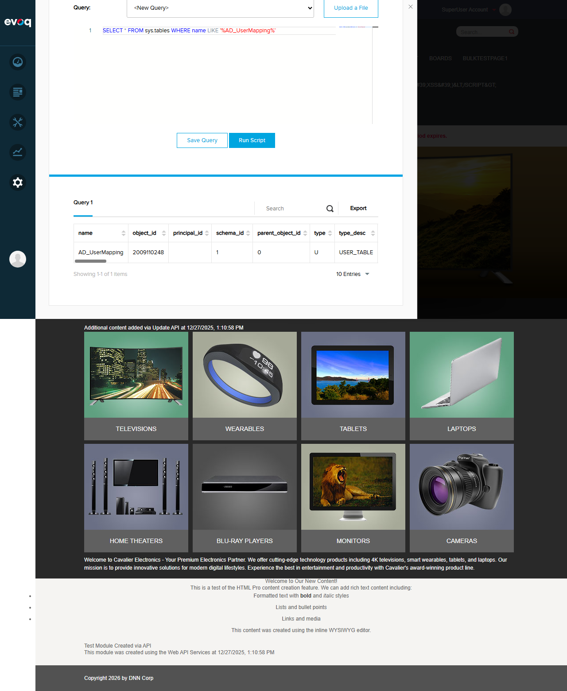
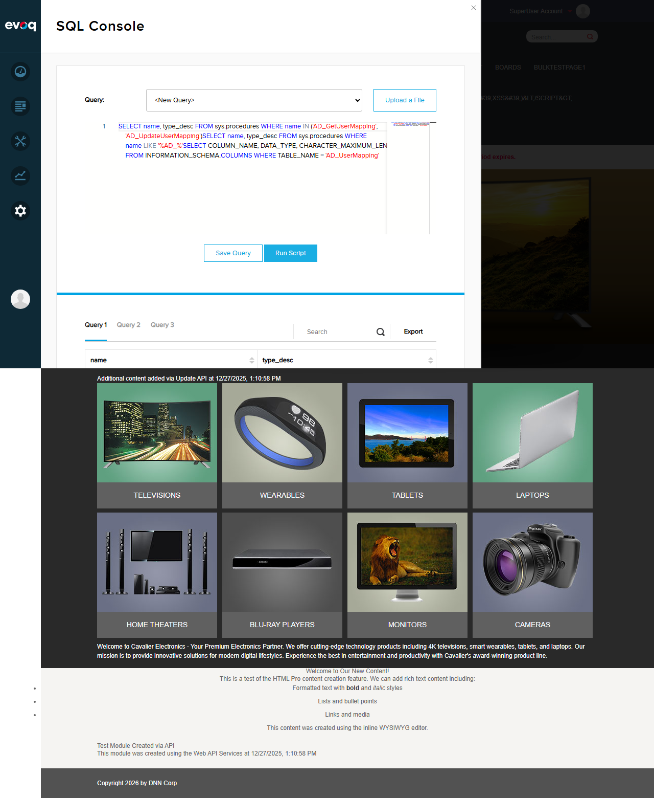

Test 1: Verify User Mapping Table Creation
PASS
What was tested
Verification that the AD_UserMapping database table exists with the correct structure (MappingId, IdentityName, UserId) and associated stored procedures (AD_GetUserMapping, AD_UpdateUserMapping).
Steps Taken
- Logged in as SuperUser (host/Pass123456)
- Navigated to Settings > Security > Authentication to confirm DNNPro_ActiveDirectory provider is available
- Opened SQL Console from Settings menu
- Executed SQL query to verify AD_UserMapping table exists
- Executed SQL query to verify table columns (MappingId, IdentityName, UserId)
- Executed SQL query to verify stored procedures exist
Evidence

Security > Authentication settings showing Basic Login Settings

Default Authentication Provider dropdown showing DNNPro_ActiveDirectory option available

SQL query confirming AD_UserMapping table exists (type: USER_TABLE)
SQL query showing table columns: MappingId (int), IdentityName (nvarchar 200), UserId (int)

SQL query confirming stored procedures: AD_GetUserMapping and AD_UpdateUserMapping exist
Database Structure Verified
| Component | Name | Details | Status |
|---|---|---|---|
| Table | AD_UserMapping | Stores UPN to UserId mappings | Exists |
| Column | MappingId | int (Primary Key, Auto-increment) | Verified |
| Column | IdentityName | nvarchar(200) - Stores AD UPN | Verified |
| Column | UserId | int (Foreign Key to Users table with CASCADE DELETE) | Verified |
| Stored Procedure | AD_GetUserMapping | Retrieves DNN username from AD identity name | Exists |
| Stored Procedure | AD_UpdateUserMapping | Creates/updates mapping between AD identity and DNN user | Exists |
Result
PASS - The User Identity Mapping database infrastructure is correctly installed and configured.